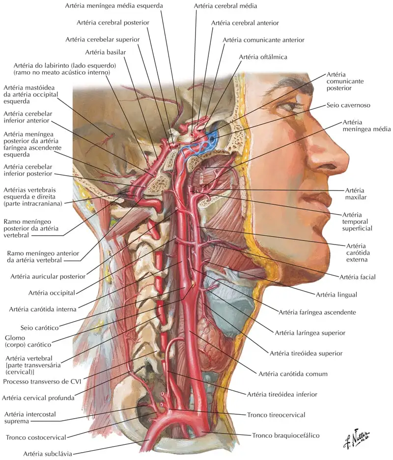
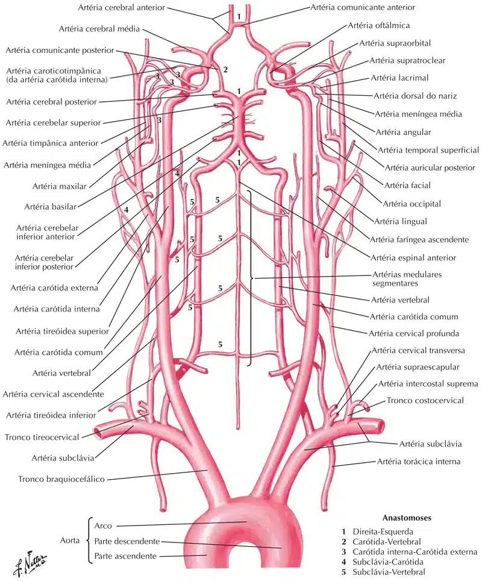
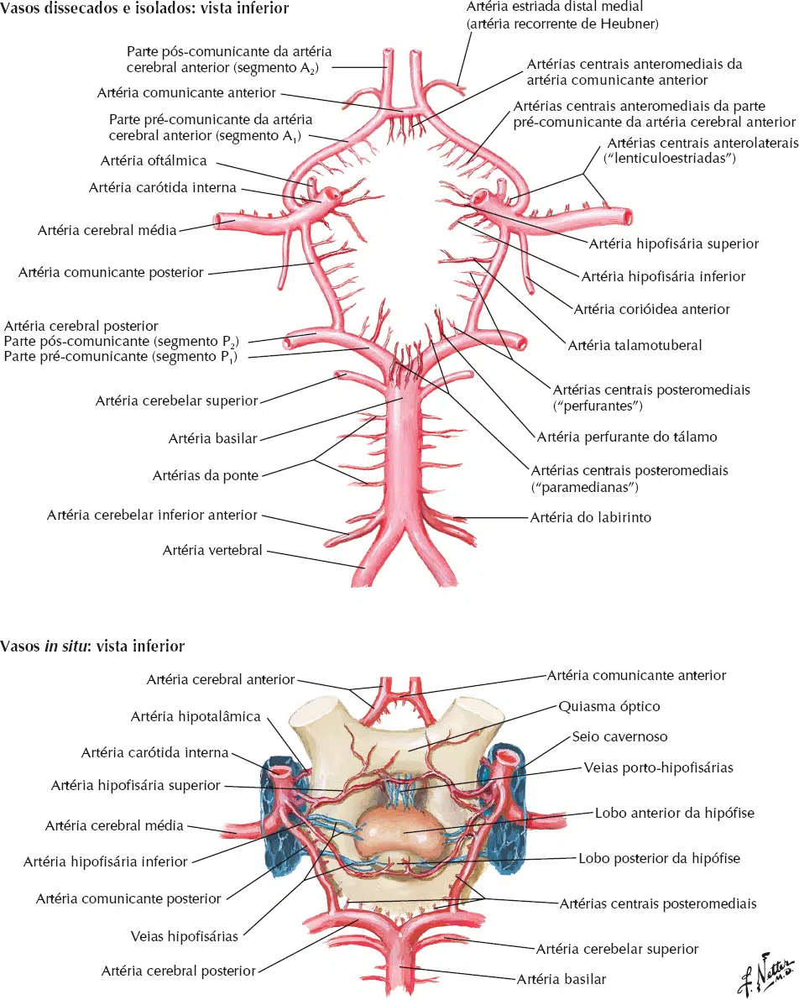
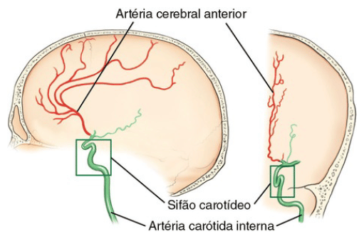
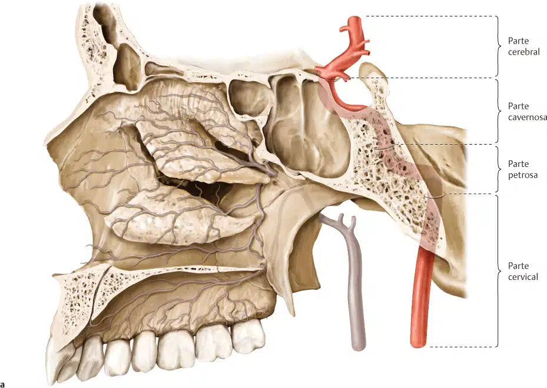
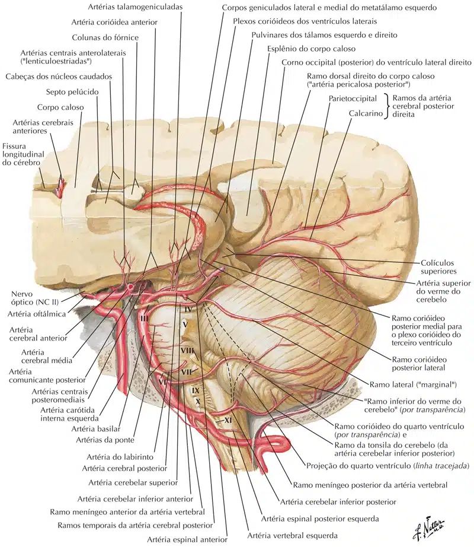
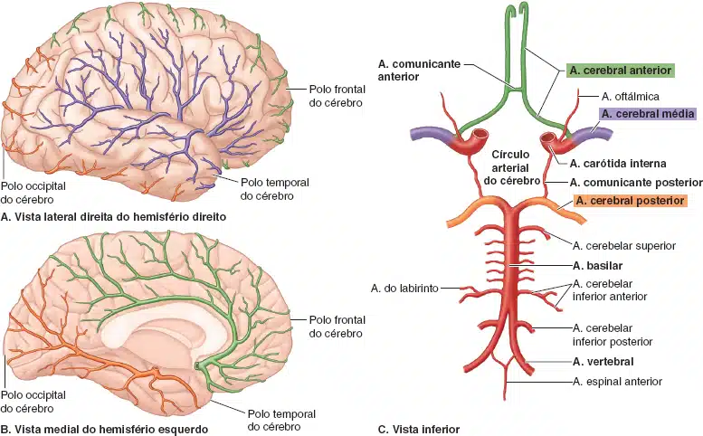
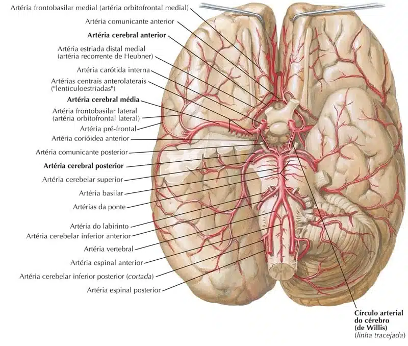
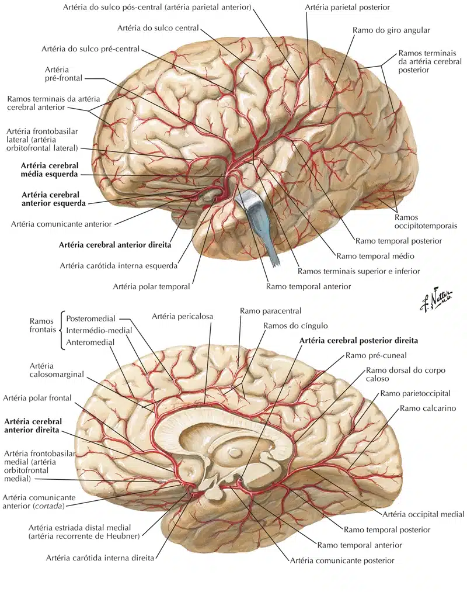

A parte central do sistema nervoso recebe uma grande quantidade de sangue.
O metabolismo encefálico depende de suprimento constante de oxigênio e glicose.
O cérebro recebe cerca de 14% do débido cardíaco, consumindo cerca de 20% do oxigênio.
A substância cinzenta do cérebro apresenta maior vascularização, quando comparada à substância branca.
O encéfalo recebe a irrigação arterial de dois sistemas:
Vértebro-basilar e carotídeo interno.
O sistema vértebro-basilar, denominado de sistema posterior, é formado pelas duas artérias vertebrais, que posteriormente se unem para formar a artéria basilar.
A artéria vertebral origina ramos para a medula espinal, cerebelo e tronco encefálico.
A artéria basilar contribui para a irrigação do cérebro.
Artéria vertebral: origina-se da primeira parte da artéria subclávia (medialmente ao músculo escaleno anterior).
Ascende pelo pescoço protegida pelos processos transversos das vértebras cervicais (atravessa os forames transversários).
Na face superior do atlas, a artéria vertebral se curva posteriormente, perfurando a membrana atlantoccipital posterior, e entrando na cavidade craniana pelo forame magno.
Na cavidade craniana, a artéria vertebral ascende na região ântero-lateral do bulbo e, na altura do sulco bulbopontino se anastomosa com a artéria vertebral contralateral, formando a artéria basilar.
Ramos da artéria vertebral: a. espinal anterior, aa. espinais posteriores e a. cerebelar inferior posterior.
Artéria basilar (do grego básilon – apoiada): origina-se da anastomose entre as duas artérias vertebrais, na altura do sulco bulbopontino.
Após sua origem, ascende no sulco basilar da ponte.
Ramos da artéria basilar: a. cerebelar inferior anterior, a. do labirinto, aa. da ponte, aa. mesencefálicas, a. cerebelar superior e a. cerebral posterior.
O sistema carotídeo interno, sistema anterior, é constituído pelas artérias carótidas internas e seus ramos.
Artéria carótida interna (do grego karotikós – relativo à cabeça): as artérias carótidas internas se originam das artérias carótidas comuns, na altura da cartilagem tireóidea, no pescoço.
A artéria carótida interna ascende verticalmente no pescoço, acompanhada pela veia jugular interna e o nervo vago.
Na base do crânio, atravessa o canal carótido do osso temporal (formando o sifão carotídeo).
Na cavidade craniana, a artéria carótida interna emerge lateralmente a sela turca, descreve uma alça e lateralmente ao processo clinóide anterior se divide em seus ramos.
Ramos para o encéfalo: a. hipofisária superior, a. comunicante posterior, a. do unco, a. corióidea anterior, a. cerebral anterior e artéria cerebral média.
Os ramos arteriais dos dois sistemas (vértebro-basilar e carotídeo interno), anastomosam-se na base do crânio, entorno da hipófise (circundando o quiasma óptico e o túber cinério).
A anastomose forma o círculo arterial do cérebro (polígono de “Willis”).






Formado pela união dos ramos dos sistemas vértebro-basilar e carotídeo interno.
O polígono de Willis ou círculo de Willis (também chamado de círculo arterial cerebral ou círculo arterial de Willis) é um círculo de artérias que suprem o cérebro.
Foi nomeado em homenagem ao médico inglês Thomas Willis (1621-1673).
As artérias que constituem o círculo arterial do cérebro são: a. cerebral anterior, a. cerebral média, a. comunicante anterior, a. comunicante posterior, a. cerebral posterior e a. basilar.
Artéria cerebral anterior: ramo da artéria carótida interna.
A artéria cerebral anterior está localizada na face medial do telencéfalo, curvando-se superiormente ao corpo caloso(formando a artéria pericalosa).
Distribui ramos para os lobos frontal e parietal (na face medial), face inferior do lobo frontal e, parte superior, próximo a fissura longitudinal do cérebro para os lobos frontal e parietal (na face súpero-lateral).
Artéria comunicante anterior: ramo da artéria cerebral anterior.
A artéria comunicante anterior comunica as artérias cerebrais anteriores.
Localiza-se anteriormente ao quiasma óptico e, em alguns casos pode estar ausente.
Artéria cerebral média: ramo da artéria carótida interna.
A artéria cerebral média se desloca lateralmente para percorrer o sulco lateral do cérebro.
Em seu trajeto distribui ramos para os núcleos da base e lobo insular.
Após percorrer o sulco lateral, alcança a face súpero-lateral do cérebro, distribuindo ramos para os lobos frontal, parietal e temporal.
Artéria comunicante posterior: ramo da artéria carótida interna.
A artéria comunicante posterior se anastomosa com a artéria cerebral posterior (do sistema vértebro-basilar).
Artéria cerebral posterior: ramo da artéria basilar.
A artéria cerebral posterior contorna os pedúnculos cerebrais, dirigindo-se para a face inferior do telencéfalo.
Supre os lobos temporal e occipital.
Artéria basilar: descrita anteriormente.


